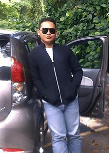
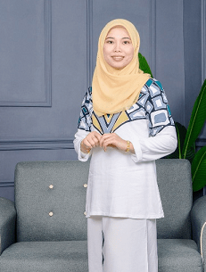
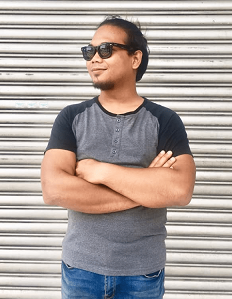

My father is from Muar, Johor. He was born on May 26 and died at the age of 53.
He was a policeman in Taiping in the mechanics division.
He is very good at repairing cars, making houses, cooking and so on.
But his nature is very quiet and hard working for the family.
He is also very good at managing finances and not wasting money.
After my late father’s death, a lot has changed and there are only past memories that I have.
My mother is from Taiping, Perak.
She is 58 years old this year. He was born on September 1.
She is a full -time housewife and only worked when she was unmarried.
She is married to a policeman and has 5 children, 3 boys and 2 girls.
My mother became an idol for myself because of her very wise nature of time management, always positive, not caring about strangers and educating her children by good example.
After the death of her beloved husband, she was still strong enough to take care of the children.
Norsidah Binti Hashim
My Siblings's
ALONG
Muhammad Hafiz Bin Kamaruddin
34 years old
Date of birthday on 26 April
Stay in Selangor
Work as a Policeman
Married with a housewife
Have 3 child (1 girl and 2 boys)
He is a very serious person, less talkative and easily mad

KAKNGAH
Norhafizah Binti Kamaruddin
33 years old
Date of birthday on 9 April
Stay in Perak
Work as a Assistant Engineer
Married with a Navy's husband
Have 2 child (2 girls)
She is a person who is very love of tidying the house and keeping it clean

UDE
Muhammad Hafizi Bin Kamaruddin
29 years old
Date of birthday on 27 April
Stay in Kuala Lumpur
Work as a Policeman
Married with a Policewomen wife
Have 1 child (1 girl)
He is a person who is good at making jokes and very easy to deal with him

ABANG NIP
Muhd Hanif Bin Kamaruddin
25 years old
Date of birthday on 9 November
Stay in Pulau Pinang
Work as a Senior Technician
Single but not available
He is an unpredictable person and do not care about other people's affairs